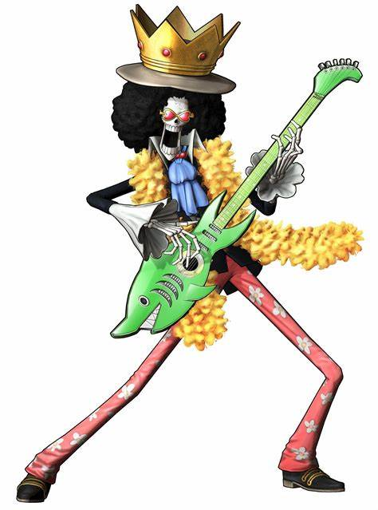

Brook

Brook
Brook, também conhecido como “Soul King”, é o músico dos Piratas do Chapéu de Palha. Ele é um esqueleto que os Chapéus de Palha encontraram a bordo de um navio fantasma depois de entrarem no Triângulo Florian. Brook é um usuário de Akuma no Mi que comeu a Yomi Yomi no Mi, o que o torna um pseudo-imortal por causa de seus poderes1. Brook é uma figura única e essencial na tripulação dos Chapéus de Palha, trazendo música, humor e habilidades únicas para o grupo3
Ouvir Personagem